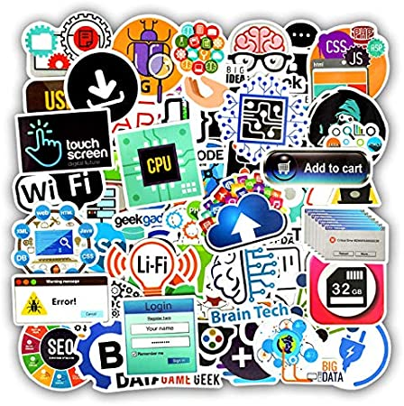

Un lenguaje de programación es un lenguaje formal (o artificial, es decir, un lenguaje con reglas gramaticales bien definidas) que le proporciona a una persona, en este caso el programador, la capacidad de escribir (o programar) una serie de instrucciones o secuencias de órdenes en forma de algoritmos con el fin de controlar el comportamiento físico o lógico de un sistema informático, de manera que se puedan obtener diversas clases de datos o ejecutar determinadas tareas. A todo este conjunto de órdenes escritas mediante un lenguaje de programación se le denomina programa informático.
TIPOS DE LENGUAJES DE PROGRAMACION
CARACTERISTICAS
GALERIA
